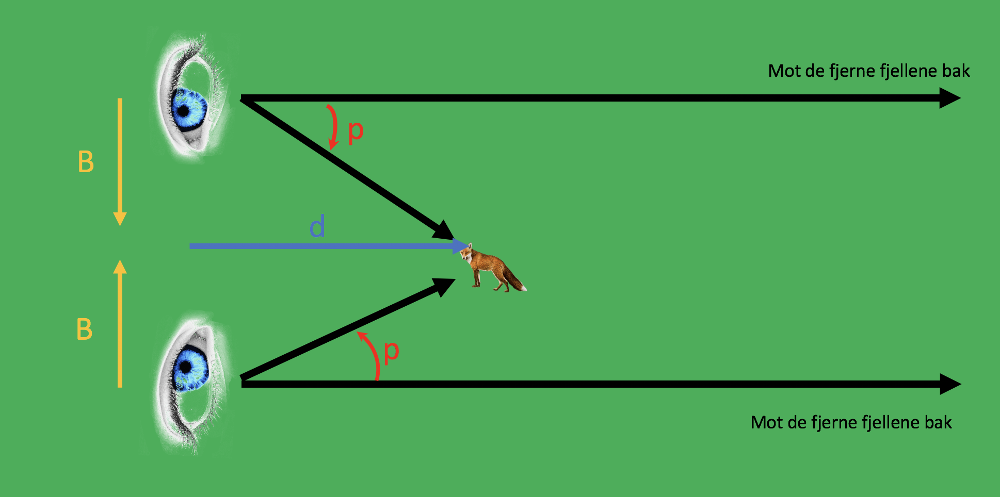

Forrige side🙂 🙁parallakse

Liten-vinkel-formel gir: B = dp (hvor p må være i radianer) Hvis vi sier at avstanden mellom nese og øye er 10cm, og du ser en endring i revens posisjon på 0.1 grad fra et øye til det andre, hvor langt unna er revet? Jeg har et svar!